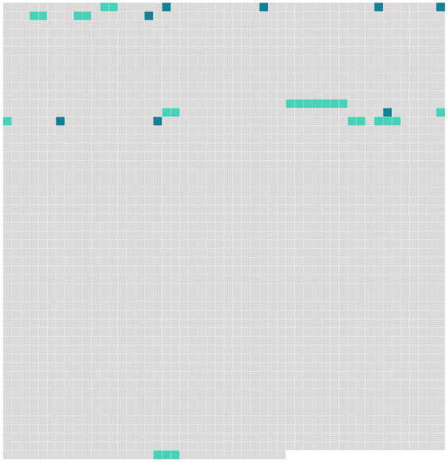

Longueur nb maillons : 17 mentions |
 |
Dans ce cas, avant de faire droit, ils autoriseront [la femme] à quitter la compagnie de [son] mari, sans être tenue de le recevoir, si [elle] ne le juge à propos ; et ils condamneront le mari à [lui] payer une pension alimentaire proportionnée à [ses] facultés, si [la femme] n'a pas [elle -même] des revenus suffisans pour fournir à [ses] besoins. [21 phrases] [Le femme demanderesse ou défenderesse en divorce] , pourra quitter le domicile du mari pendant la poursuite, et demander une pension alimentaire proportionnée aux facultés du mari.
Le tribunal indiquera la maison dans laquelle [la femme] sera tenue de résider, et fixera, s'il y a lieu, la provision alimentaire que le mari sera obligé de [lui] payer. [1 phrases]
[La femme] sera tenue de justifier de [sa] résidence dans la maison indiquée, toutes les fois qu' [elle] en sera requise : à défaut de cette justification, le mari pourra refuser la provision alimentaire, et, si [la femme] est [demanderesse en divorce] , la faire déclarer non recevable à continuer ses poursuites. [71 phrases]
Dans le cas de divorce prononcé pour cause déterminée, [la femme divorcée] ne pourra se remarier que dix mois après le divorce prononcé. |
 |
La ressource peut être téléchargée sur la page Ortolang
Si vous avez des questions ou vous voyez des erreurs, merci d'envoyer un mail à silvia.federzoni89@gmail.com
Site développé par S. Federzoni (contact)